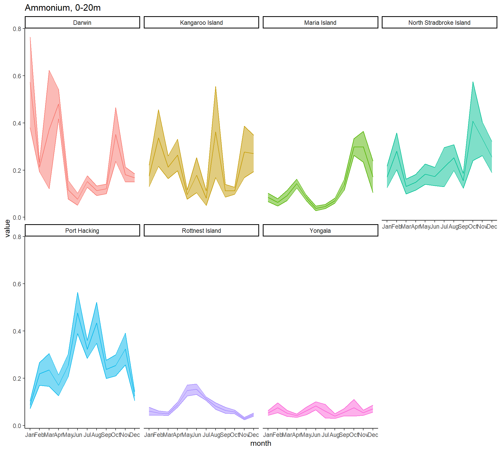
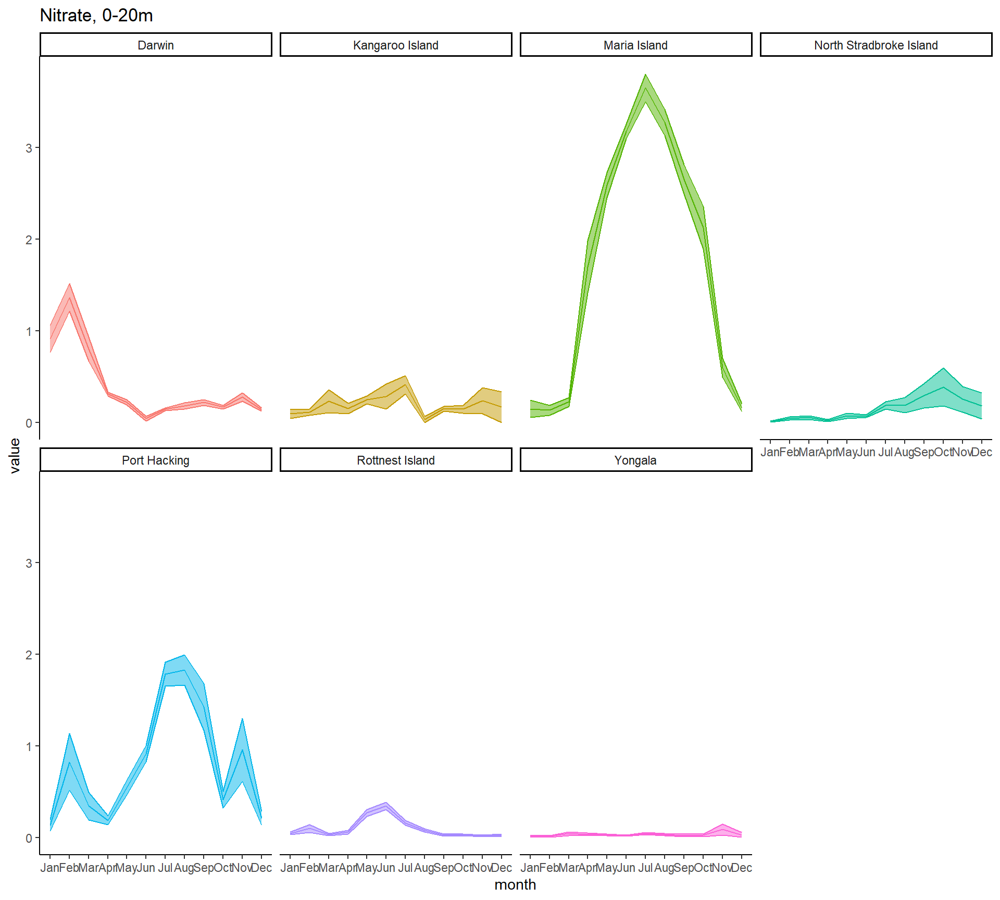

All the code in this markdown is set to ‘fold’ by default. Click each folded code chunk to see its inner workings.
# You did it!# You did it!ref <- read.csv(file.path(path, "ref_station_data", "IMOS_-_Combined_Biogeochemical_parameters_(reference_stations)-NRS_combined_biogeochemical_parameters.csv")) %>%
# Flags are redundant
select(-c("Salinity_flag", "DIC_flag", "Alkalinity_flag", "Oxygen_flag", "Ammonium_flag", "Nitrate_flag", "Nitrite_flag", "Phosphate_flag", "Silicate_flag", "TSSall_flag", "Prochlorococcus_flag", "Synechococcus_flag", "Picoeukaryotes_flag", "Pigments_flag"))
pig <- ref %>%
select("FID", "Project", "StationName", "TripCode", "TripDate_UTC", "SampleTime_Local", "Latitude", "Longitude", "SampleDepth_m", "SampleID", "Allo_mgm3", "AlphaBetaCar_mgm3", "Anth_mgm3", "Asta_mgm3", "BetaBetaCar_mgm3", "BetaEpiCar_mgm3", "Butfuco_mgm3", "Cantha_mgm3", "CphlA_mgm3", "CphlB_mgm3", "CphlC1_mgm3", "CphlC2_mgm3", "CphlC3_mgm3", "CphlC1C2_mgm3", "CphlideA_mgm3", "Diadchr_mgm3", "Diadino_mgm3", "Diato_mgm3", "Dino_mgm3", "DvCphlA.CphlA_mgm3", "DvCphlA_mgm3", "DvCphlB.CphlB_mgm3", "DvCphlB_mgm3", "Echin_mgm3", "Fuco_mgm3", "Gyro_mgm3", "Hexfuco_mgm3", "Ketohexfuco_mgm3", "Lut_mgm3", "Lyco_mgm3", "MgDvp_mgm3", "Neo_mgm3", "Perid_mgm3", "PhideA_mgm3", "PhytinA_mgm3", "PhytinB_mgm3", "Pras_mgm3", "PyrophideA_mgm3", "PyrophytinA_mgm3", "Viola_mgm3", "Zea_mgm3", "geom")
phy <- ref %>%
select("FID", "Project", "StationName", "TripCode", "TripDate_UTC", "SampleTime_Local", "Latitude", "Longitude",
"SampleDepth_m", "SampleID", "Prochlorococcus_cellsmL", "Synechococcus_cellsmL", "Picoeukaryotes_cellsmL", "AustralianMicrobiomeId", "geom")
ref <- ref %>%
select("StationName", "TripCode", "TripDate_UTC", "SampleTime_Local", "Latitude", "Longitude", "SampleDepth_m",
setdiff(colnames(ref), unique(c(colnames(pig), colnames(phy))))
) %>%
mutate(StationName = as.factor(StationName),
TripDate_UTC = as_date(TripDate_UTC),
SampleTime_Local = as_datetime(SampleTime_Local),
SampleDepth_m = as.numeric(SampleDepth_m), # "WC" (pooled depth) is now NA
SampleDate = as.Date(format(SampleTime_Local, format="%Y-%m-%d"))) %>%
# 10-15 and 15-20 were collapsed, same with 20-25 and 25-30 because very little distinction
filter(SampleDepth_m <= 30 | is.na(SampleDepth_m)) %>%
mutate(depth_band = cut(SampleDepth_m, breaks = c(0, 5, 10, 20, 30.5),
include.lowest = T, right = T, ordered_result = F),
depth_band = as.character(depth_band),
depth_band = case_when(is.na(depth_band) ~ "Pooled",
TRUE ~ depth_band),
depth_band = factor(depth_band, levels = c("[0,5]", "(5,10]", "(10,20]", "(20,30.5]", "Pooled"),
labels = c("0-5m", "5-10m", "10-20m", "20-30m", "Pooled")))
rm(pig, phy)reflocs <- ref %>%
dplyr::select(StationName, Latitude, Longitude) %>%
mutate(code = case_when(StationName == "Darwin" ~ "NTE_darwin",
StationName == "Esperance" ~ "WAU_esper",
StationName == "Kangaroo Island" ~ "SAU_kanga",
StationName == "Maria Island" ~ "TAS_maria",
StationName == "Ningaloo"~ "WAU_ningaloo",
StationName == "North Stradbroke Island" ~ "QLD_strad",
StationName == "Port Hacking" ~ "NSW_hack",
StationName == "Rottnest Island" ~ "WAU_rott",
StationName == "VBM100 - Bonney Coast" ~ "NSW_bonney",
StationName == "Yongala" ~ "QLD_yonga"
)
) %>%
group_by(code, StationName) %>%
reframe(lat = mean(Latitude, na.rm = T),
lon = mean(Longitude, na.rm = T))
write_parquet(reflocs, file.path("C:/Users/treimer/Documents/R-temp-files/FRDC-seaweed", "data", "nitrogen",
"refstation_locations.parquet"))
ggplot(reflocs, aes(x = lon, y = lat, label = StationName)) +
geom_sf(data = ozmap_data(), inherit.aes = F) +
coord_sf(xlim = c(110, 160)) +
geom_point() +
geom_text(nudge_y = 0.75) +
theme_classic()
sal <- ref %>%
select("StationName", "Latitude", "Longitude", "Salinity", "SampleDate", "depth_band") %>%
filter(!is.na(Salinity)) %>%
mutate(StationName = droplevels(StationName),
depth_band = droplevels(depth_band)) %>%
group_by(StationName, Latitude, Longitude, depth_band, SampleDate) %>%
reframe(value = mean(Salinity))sec <- ref %>%
select("StationName", "Latitude", "Longitude", "SecchiDepth_m", "SampleDate", "depth_band") %>%
filter(!is.na(SecchiDepth_m)) %>%
mutate(StationName = droplevels(StationName),
depth_band = droplevels(depth_band)) %>%
group_by(StationName, Latitude, Longitude, depth_band, SampleDate) %>%
reframe(value = mean(SecchiDepth_m))This is to get a general feel for the consistency of the actual values, and whether there are any huge trends/outliers I should keep an eye out for going forward.
nit <- ref %>%
select(StationName, Latitude, Longitude, Ammonium_umolL, SampleDepth_m, SampleDate, Nitrate_umolL, Nitrite_umolL, depth_band) %>%
pivot_longer(cols = c(Ammonium_umolL, Nitrate_umolL, Nitrite_umolL),
values_to = "value", names_to = "measure") %>%
mutate(measure = as.factor(measure)) %>%
filter(!is.na(value), depth_band %in% c("0-5m", "5-10m", "10-20m")) %>%
mutate(StationName = droplevels(StationName),
depth_band = droplevels(depth_band))
ggplot(nit, aes(x = SampleDate, y = value, colour = measure)) +
geom_point() +
facet_wrap(vars(StationName)) +
theme_classic()
Right away I can see that the “VBM100 - Bonney Coast” data isn’t going to be much use to me, as there’s not much of it and it’s pretty similar to its closest neighbour (Kangaroo Island). However, the highest value in the whole dataset (1.4) is a nitrate measurement from Bonney Coast which was not also measured at Kangaroo Island, so I’ll just keep that in mind.
I’m also going to filter out nitrate as it’s not relevant to the seaweed model.
nit <- nit %>%
filter(StationName != "VBM100 - Bonney Coast") %>%
filter(measure != "Nitrite_umolL")Looks like samples were taken pretty consistently across measures and stations.
nit_stations <- nit %>%
group_by(StationName, Latitude, Longitude, depth_band, measure) %>%
reframe(num_samples = n())
ggplot(nit_stations, aes(x = Longitude, y = Latitude, size = num_samples, colour = measure)) +
geom_sf(data = ozmap_data(), inherit.aes = F) +
coord_sf(xlim = c(110, 160)) +
geom_point() +
facet_grid(cols = vars(depth_band), rows = vars(measure)) +
theme_classic() +
theme(legend.position = "bottom")
But note that there is one major station in WA (Rottnest Island) and two minor stations (Esperance and Ningaloo) which have a lot less data in all respects.
nit_time <- nit %>%
group_by(StationName, Latitude, Longitude, SampleDate, depth_band, measure) %>%
reframe(num_samples = n())
ggplot(nit_time, aes(x = SampleDate, y = depth_band, size = num_samples, colour = StationName)) +
geom_point() +
facet_wrap(vars(StationName)) +
theme_classic() +
theme(legend.position = "bottom")
It looks like the two minor stations have less data because they only collected it for a limited time: from 2010-11-08 to 2013-05-09 in Ningaloo and from 2009-05-12 to 2013-03-14 in Esperance.
Most of my other data runs from 2009-2018. Might quickly compare the three WA stations to see if there are any major considerations to take into account.
nit_WA <- nit %>%
filter(StationName %in% c("Rottnest Island", "Ningaloo", "Esperance"))
ggplot(nit_WA, aes(x = SampleDate, y = value, colour = StationName)) +
geom_point() +
facet_grid(rows = vars(measure)) +
theme_classic() +
theme(legend.position = "bottom")
Right away Esperance isn’t super useful, even though collection started slightly earlier. Ningaloo is also pretty much identical to Rottnest island in measured ammonium, however Ningaloo had some very high measured nitrate values in 2013. Even so, I’m going to remove Ningaloo but once again keep in mind that nitrate could go up to 1.5 \(\mu\)mol/L.
nit <- nit %>%
filter(StationName != "Esperance" & StationName != "Ningaloo")lm1 <- lm(value ~ SampleDate*SampleDepth_m*StationName, data = filter(nit, measure == "Ammonium_umolL"))
lm1 <- step(lm1, trace = F)
summary(aov(lm1)) Df Sum Sq Mean Sq F value Pr(>F)
SampleDate 1 0.81 0.8085 8.898 0.00288 **
SampleDepth_m 1 0.21 0.2099 2.310 0.12866
StationName 6 17.38 2.8960 31.872 < 2e-16 ***
Residuals 2831 257.23 0.0909
---
Signif. codes: 0 '***' 0.001 '**' 0.01 '*' 0.05 '.' 0.1 ' ' 1dt <- as.data.frame(TukeyHSD(aov(lm1), which = "StationName")$StationName)
dt$g1 <- str_split_i(rownames(dt), "-", 1)
dt$g2 <- str_split_i(rownames(dt), "-", 2)
dt$g1 <- factor(dt$g1, unique(dt$g1))
dt$g2 <- factor(dt$g2, unique(dt$g2))
ggplot(data = dt, aes(g1, g2, fill=`p adj`, label = round(`p adj`, 2))) +
geom_tile() +
geom_text() +
scale_fill_viridis_c()
nit_seas <- nit %>%
filter(measure == "Ammonium_umolL") %>%
mutate(month = month(SampleDate)) %>%
group_by(StationName, month, measure) %>%
reframe(n = n(),
se = sd(value, na.rm = T)/sqrt(n),
value = mean(value, na.rm = T))
ggplot(filter(nit_seas, measure == "Ammonium_umolL"),
aes(x = month, y = value, colour = StationName, fill = StationName, ymin = value-se, ymax = value+se)) +
geom_line() +
geom_ribbon(alpha = 0.5) +
scale_x_continuous(breaks = 1:12, labels = month.abb) +
facet_wrap(vars(StationName), nrow = 2) +
theme_classic() +
theme(legend.position = "none") +
ggtitle("Ammonium, 0-20m")
The Tukey test showed that Rottnest and Yongala were pretty similar - probably because they’re both very low, although Rottnest appears to have a small peak around May-June. Port Hacking has a similarly timed peak, although it’s ammonium levels are generall higher and the data is more noisy. Mariah island was the only one to show a peak around November, but overall ammonium was extremely low around the country.
lm1 <- lm(value ~ SampleDate*SampleDepth_m*StationName,
data = filter(nit, measure == "Nitrate_umolL"))
lm1 <- step(lm1, trace = F)
summary(aov(lm1)) Df Sum Sq Mean Sq F value Pr(>F)
SampleDepth_m 1 11.2 11.19 13.498 0.000243 ***
StationName 6 995.4 165.91 200.068 < 2e-16 ***
SampleDepth_m:StationName 6 12.2 2.03 2.446 0.023179 *
Residuals 2908 2411.4 0.83
---
Signif. codes: 0 '***' 0.001 '**' 0.01 '*' 0.05 '.' 0.1 ' ' 1dt <- as.data.frame(TukeyHSD(aov(lm1), which = "StationName")$StationName)
dt$g1 <- str_split_i(rownames(dt), "-", 1)
dt$g2 <- str_split_i(rownames(dt), "-", 2)
dt$g1 <- factor(dt$g1, unique(dt$g1))
dt$g2 <- factor(dt$g2, unique(dt$g2))
ggplot(data = dt, aes(g1, g2, fill=`p adj`, label = round(`p adj`, 2))) +
geom_tile() +
geom_text() +
scale_fill_viridis_c()
nit_seas <- nit %>%
filter(measure == "Nitrate_umolL") %>%
mutate(month = month(SampleDate)) %>%
group_by(StationName, month, measure) %>%
reframe(n = n(),
se = sd(value, na.rm = T)/sqrt(n),
value = mean(value, na.rm = T))
ggplot(filter(nit_seas, measure == "Nitrate_umolL"),
aes(x = month, y = value, colour = StationName, fill = StationName, ymin = value-se, ymax = value+se)) +
geom_line() +
geom_ribbon(alpha = 0.5) +
scale_x_continuous(breaks = 1:12, labels = month.abb) +
facet_wrap(vars(StationName), nrow = 2) +
theme_classic() +
theme(legend.position = "none") +
ggtitle("Nitrate, 0-20m")
With few exceptions, it seems very difficult to get any kind of trend out of this data. But what I can do is provide a “baseline” to the model.
savepath <- "C:/Users/treimer/Documents/R-temp-files/FRDC-seaweed"
nit$value <- drop_units(set_units(set_units(nit$value*14.0067, "ug L-1"), "mg m-3"))
nit <- nit %>%
mutate(measure = factor(measure, levels = c("Ammonium_umolL", "Nitrate_umolL"),
labels = c("Ammonium_mgm3", "Nitrate_mgm3")))
refstation_TAS_maria <- filter(nit, StationName == "Maria Island")
(p <- ggplot(refstation_TAS_maria, aes(x = factor(month(SampleDate)), y = value, fill = measure)) +
geom_boxplot(position = position_dodge()) +
scale_y_continuous(breaks = seq(0, 10, 0.5)) +
theme_classic() +
labs(x = "Month", y = "Concentration (umol/L)"))
write_csv(refstation_TAS_maria, file.path(savepath, "data", "nitrogen", "refstation_TAS_maria.csv"))
ggsave(plot = p, filename = file.path(savepath, "data", "nitrogen", "refstation_TAS_maria.png"))
refstation_NTE_darwin <- filter(nit, StationName == "Darwin")
(p <- p %+% refstation_NTE_darwin)
write_csv(refstation_NTE_darwin, file.path(savepath, "data", "nitrogen", "refstation_NTE_darwin.csv"))
ggsave(plot = p, filename = file.path(savepath, "data", "nitrogen", "refstation_NTE_darwin.png"))
refstation_SAU_kanga <- filter(nit, StationName == "Kangaroo Island")
(p <- p %+% refstation_SAU_kanga)
write_csv(refstation_SAU_kanga, file.path(savepath, "data", "nitrogen", "refstation_SAU_kanga.csv"))
ggsave(plot = p, filename = file.path(savepath, "data", "nitrogen", "refstation_SAU_kanga.png"))
refstation_QLD_strad <- filter(nit, StationName == "North Stradbroke Island")
(p <- p %+% refstation_QLD_strad)
write_csv(refstation_QLD_strad, file.path(savepath, "data", "nitrogen", "refstation_QLD_strad.csv"))
ggsave(plot = p, filename = file.path(savepath, "data", "nitrogen", "refstation_QLD_strad.png"))
refstation_NSW_hack <- filter(nit, StationName == "Port Hacking")
(p <- p %+% refstation_NSW_hack)
write_csv(refstation_NSW_hack, file.path(savepath, "data", "nitrogen", "refstation_NSW_hack.csv"))
ggsave(plot = p, filename = file.path(savepath, "data", "nitrogen", "refstation_NSW_hack.png"))
refstation_WAU_rott <- filter(nit, StationName == "Rottnest Island")
(p <- p %+% refstation_WAU_rott)
write_csv(refstation_WAU_rott, file.path(savepath, "data", "nitrogen", "refstation_WAU_rott.csv"))
ggsave(plot = p, filename = file.path(savepath, "data", "nitrogen", "refstation_WAU_rott.png"))
refstation_QLD_yonga <- filter(nit, StationName == "Yongala")
(p <- p %+% refstation_QLD_yonga)
write_csv(refstation_QLD_yonga, file.path(savepath, "data", "nitrogen", "refstation_QLD_yonga.csv"))
ggsave(plot = p, filename = file.path(savepath, "data", "nitrogen", "refstation_QLD_yonga.png"))